Lista de objetos de Valheim
¿Dónde se consigue, en qué bioma y con qué herramienta? Esta lista incluye 864 objetos: materiales, comida, armas, armaduras y trofeos. De cada objeto verás su origen (árboles, yacimientos, criaturas, cofres, mercaderes), la herramienta necesaria, la receta y para qué sirve. Todos los datos se leen directamente de los archivos del juego (versión 1.0.21).
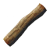
Materiales305 objetos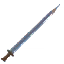
Armas, herramientas y munición200 objetosNo se encontró ningún objeto.
Materiales
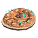
Bandeja de bufé del Bosque negro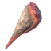
Carne de lobo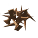
Clavos de bronce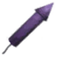
Cohete morado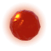
Esencia de sangre de trueno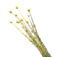
Lino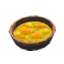
Malta: supervigorizante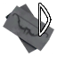
Molde: arco nord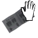
Molde: nudillos nordComida y pociones
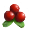
Arándanos rojos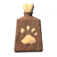
Brebaje de susurros salvajes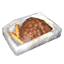
Carne de oso desmenuzada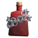
Hidromiel berserkir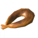
Pescado ahumado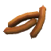
Salchichas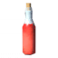
Zumo de arándanos rojosArmas, herramientas y munición
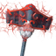
Almádena de sangre de trueno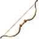
Arco de madera noble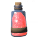
Bombabosa: Lava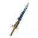
Daga nord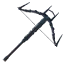
Desgarradora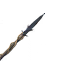
Lanza de corteza ancestral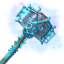
Maza de fuego gélido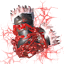
Nudillos de sangre de trueno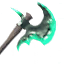
PartecráneosArmaduras, escudos y accesorios
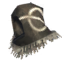
Capucha de Odín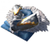
Coraza del Protector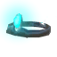
Diadema de Dverger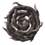
Escudo de raíces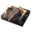
Faldón de hueso vil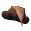
Gorra festiva